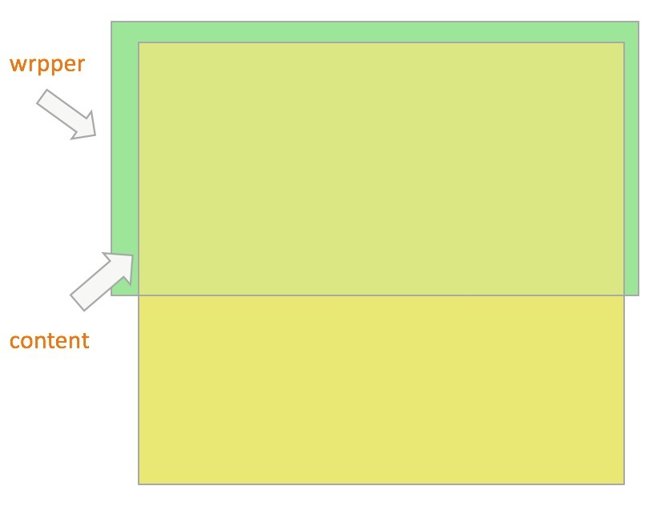

移动端页面常见的一种效果：下拉刷新（pulldownrefresh）和上拉加载（pullupload），目的都是为了增强用户的体验效果，因此各种移动端滑动插件也是层出不穷，今天小编也在这里给大家推荐一个滑动插件：better-scroll。
GitHub地址：better-scroll
利用better-scroll也很轻易的实现上述效果。
项目是基于vue-cli脚手架创建的，所以先必须创建项目（步骤略）。
better-scroll插件下载：npm install better-scroll --save
项目中引入：import BScroll from 'better-scroll'
引入之后我们可以通过new BScroll()得到一个scroll对象实例，better-scroll的基本语法是：
let wrapper = document.querySelector('.wrapper')
let scroll = new BScroll(wrapper, {})better-scroll之所以可以滑动，其原理在于父级元素指定具体宽高，子元素宽高大于父级元素，即可实现滑动，以上两点缺一不可。可以看以下官方图解：

因为我们在vue项目中使用，所以这里还必须强调一点，初始化better-scroll得到scroll对象时必须保证DOM结构渲染完毕，也就是说wrapper里面的内容都渲染完毕之后才能初始化better-scroll，否则可能导致滑动失效。常见的我们可以把初始化BScroll放在this.$nextTick回调函数种执行，因为在此时wrapper 的 DOM 已经渲染了，我们可以正确计算它以及它内层 content 的高度，以确保滚动正常。
这里的 this.$nextTick 是一个异步函数，为了确保 DOM 已经渲染，感兴趣的同学可以了解一下它的内部实现细节，底层用到了MutationObserver或者是 setTimeout(fn, 0)。其实我们在这里把 this.$nextTick 替换成 setTimeout(fn, 20) 也是可以的（20 ms 是一个经验值，每一个 Tick 约为 17 ms），对用户体验而言都是无感知的。
pullUpLoad和pullDownRefresh属性mounted () {
...发Ajax得到数据...
...
this.$nextTick(() => {
this.myScroll = new BScroll(this.$refs.wrap, {
scrollY: true,
pullDownRefresh: {
threshold: 50,
probeType: 3
},
pullUpLoad: {
threshold: 744
}
})
})
}pullDownRefresh表示开启下拉刷新，pullUpLoad表示开启上拉加载，默认值全为false，这里具体用法可以去看下better-scroll的官网API。因为页面大多数情况下都是先从后端拿数据过来，然后再渲染DOM结构，所以我在vuemounted钩子里面先发Ajax得到数据后，再利用this.$nextTick()保证DOM渲染完毕后再初始化BScroll。
pullingUp和pullingDown事件pullingUp和pullingDown事件分别对应上拉加载和下拉刷新动作触发事件，在其回调函数里面可以做一些其他的操作，比如常见的从后台获取数据等。切记，一定要在回调的最后调用finishPullUp()和finishPullDown()方法来告诉BScroll一次上拉加载和下拉刷新动作结束，否则上拉加载和下拉刷新效果只会触发一次，本人亲自验证！在拿到数据后，如果wrapper里面的结构发生变化一定要调用refresh()方法重新初始化BScroll，否则会导致滑动异常。
this.myScroll.on('pullingDown', () => {
...发送Ajax从后台拿数据...
...
this.$nextTick(() => {
this.myScroll.refresh() // DOM 结构发生变化后，重新初始化BScroll
})
this.myScroll.finishPullDown() // 下拉刷新动作完成后调用此方法告诉BScroll完成一次下拉动作
})
this.myScroll.on('pullingUp', () => {
...发送Ajax从后台拿数据...
...
this.$nextTick(() => {
this.myScroll.refresh() // DOM 结构发生变化后，重新初始化BScroll
})
this.myScroll.finishPullUp() // 上拉加载动作完成后调用此方法告诉BScroll完成一次上拉动作
})本文最初摘自我的GitHub仓库：web-study，如果你觉得本文对你前端的学习有帮助，希望给个star，我也会定时更新仓库的内容，欢迎转载，谢谢。仓库地址：web-study
如果你有更好的移动端滑动插件推荐，欢迎留言，分享知识也是一种学习。